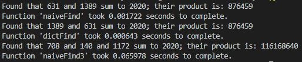

Advent of Code 2020: Day 1
I know in my introductory post I said I wasn't going to post something every day, and I meant it! But I ended up with a little extra time on my hands today and this casual summary has turned into an actual post... I'm going to have to think about how I categorize these posts so anyone who stumbled across my blog isn't wading through five pages of Advent of Code writeups before getting to tiny moving lights. But for now, here's day 1.
Full code is available on GitHub.
Much like last year, this year's Day 1 challenge starts by essentially making sure we can read in a text file and do basic math on it. The first problem asks us to find which two integers in a text file that sum to 2020 and retrieve their product; the second asks the same question, but for a set of 3 integers.
Just for gits and shiggles, I implemented the solution to part one in two different ways. The first, in a function I title "naiveFind", just loads all of the numbers from the file into a list, then loops over every pair of numbers until it finds a pair that sums to 2020 (the success() function is detailed below). This is a fine way to approach this problem, but not terribly efficient for long lists:
The speedier way to solve this problem is to use a hashmap, which we get for free in the form of Python dictionary lookups (in most implementations of Python.) Rather than looping over all pairs of numbers, we can just proceed through the the list once, storing each member in a dictionary, and as we load each new number, we check to see if it's "2020's complement" is already in our dictionary's keys. This is faster than a raw comparison because looking via hashing is cheaper than doing a 'by-hand' comparison of all of the numbers ourselves.
For the second part of the problem, I only implemented a "naive" solution, running in O(n³) time:
With the need to now communicate a set of three numbers (and their product) that form a solution, I rewrote my success() function to accommodate any number of inputs as arguments. (The original, two-input function is commented-out at the bottom.)
To see how efficient these various functions were, I wrote a quick decorator function that allows me to see the (rough) execution time of each solution:
Running all three of our search functions in turn:

We can see that:
- The naïve way of looping over all the pairs of products takes about 1.5 ms to complete
- The hashset (dictionary) method of finding one pair of numbers takes about 0.6 ms to complete
- The naïve way of finding a triple of numbers takes about 65 ms to complete
Some stray thoughts from today
- When I originally tried to run my basic test code to ensure I was reading the input text file correctly, I got the error: "No such file or directory." Which is odd, because the text file was just sitting in the same folder as my Python script, like always. It turns out that by default, VSCode uses the open folder as its source, not where the script is actually being executed. You can change this in the Python terminal settings:

- I've made use of the functools.wraps wrapper to assist me in writing my own decorator functions before, but using it again today to write the timer function makes me want to look a little deeper under the hood to see what it's doing.
Postscript:
I was just kicking around the #AdventOfCode hashtag on Twitter after completing my solutions, and ran across these super-nifty "Pythonic" solutions by @Brotherluii:
https://twitter.com/Brotherluii/status/1333756750579830784
For those for whom the embedded tweet doesn't work:
with open('input.txt', 'r') as file:data = {int(number) for number in file}
#Part 1
print({entry * (2020-entry) for entry in data if (2020-entry) in data})
#Part 2
print({entry1 * entry2 * (2020 - entry1 - entry2)
for entry1 in data for entry2 in data
if (2020 - entry1 - entry2) in data})
Though I understand list comprehensions, I feel like they're never my go-to tool, but seeing them composed like this, I can see how they can be pretty beautiful in the right hands.